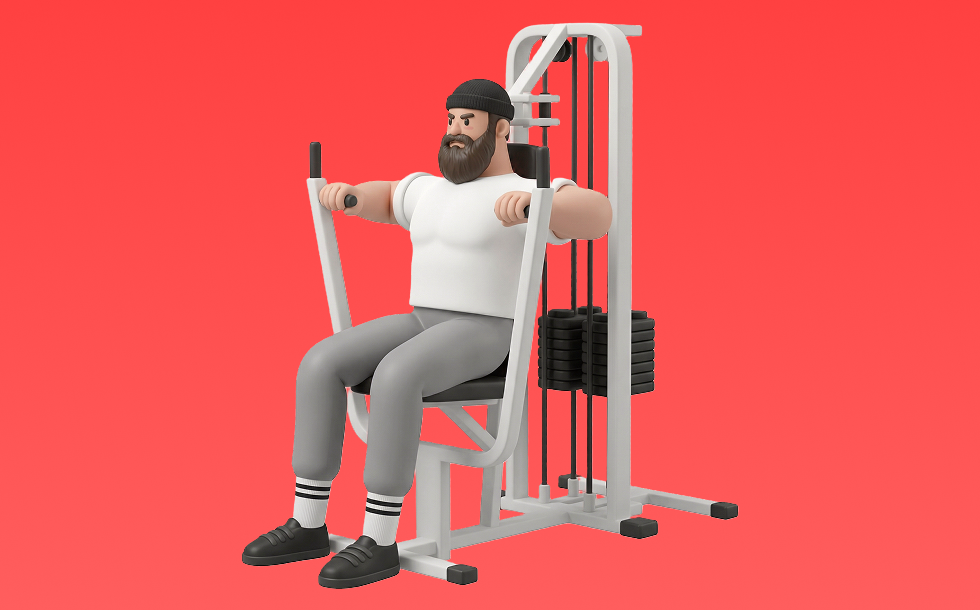

マシンチェストプレス

マシンチェストプレスとは、マシンを使って「押す」動作で胸（大胸筋）、肩前部（三角筋前部）、腕（上腕三頭筋）を鍛える種目です。軌道が安定して狙った部位に効かせやすいのが特徴で、ベンチに仰向けになり、胸に下ろして押し上げる動作を繰り返します。厚い胸板づくりや上半身の押す力の向上が期待できます。
- 対象部位
- 胸
- 器具
- マシン
- 記録形式
- 重量・回数
- 別名
- チェストプレス
YouTube動画
-
【ジム初心者】チェストプレスの使い方をプロが分かりやすく解説！【筋トレ】
-
【チェストプレス】大胸筋に効く正しいフォーム〜マシンの使い方まで徹底解説
-
【プロが教える】しっかり「胸」に効かせるチェストプレスの正しいフォーム in hacomono 【新・バズーカ岡田チャンネル】 #バズーカ岡田
-
【要注意】胸の基本種目！”チェストプレス”で効かない人がやっている失敗3選！【寺島遼】
-
筋トレで人気種目のマシンチェストプレスをトレーニング歴35年のジュラシック木澤が完全解説します
-
【胸トレ】チェストプレスのマシンを使い方から完全解説【佐野市の24時間ジム：AEGYM】
-
【チェストプレス】基本まちがってない？ボディビル世界王者 山岸秀匡が教える初心者から上級者まで必須の正しい使い方【ドラゴンの教科書】
-
チェストプレス超基礎編使い方解説
-
＜胸＞チェストプレス：基本編
-
【持田式】チェストプレスの素晴らしさを知って欲しい
-
【初心者】マシン・チェストプレスの正しいやり方 | 大胸筋を鍛えて胸板を厚くするやり方【ビーレジェンド プロテイン】
-
【ジムトレ】チェストプレスの基本の使い方徹底解説～大胸筋を鍛える・初心者おすすめ～
-
【筋トレ】チェストプレス解説講座 〜大胸筋を鍛える〜【フォーム】【初心者】
-
チェストプレスで大胸筋をしっかりと効かせるための３つのポイント
-
【目からの鱗の新常識】胸の必須種目！寺島流のチェストプレスを徹底解説。
YouTubeショート
-
「これで完璧！！！チェストプレスの正しいフォーム」#メディフィットラボスポーツ#スポーツクラブ#新山口駅直結#山口市#トレーニング#トレーニングマシン
-
【かんたんマシンの使い方】チェストプレス編＃shorts
-
チェストプレスの正しいやり方を解説します！【佐野市の24時間ジム：AEGYM】 #Shorts #ジム通い #筋トレ #ジム初心者
-
初心者向け！チェストプレスのマシンの注意点！ #shorts
-
胸筋に効かせるには「入り」が重要！#チェストプレスマシン
-
【1分で分かるマシンの使い方】チェストプレス編 #Shorts
-
胸トレで腕肩を使わないコツ #筋トレ女子
-
日本一の大胸筋が教える「チェストプレス」リアル刃牙kyo x Tsukaken
-
【チェストプレスマシン】肩を痛めないためのコツはこれ！
-
【知っておいて損は無し】#チェストプレス #富山パーソナルジム #筋トレ #通わないパーソナルジム
-
正しいショルダープレス4つのポイント #筋トレ
-
【ジムあるある】マシンの使い方を知りたい！〜チェストプレス編〜 #Shorts #ジムトレ#筋トレ
-
【痛いほど効かす】マシンチェストプレス3つのコツ
-
胸が成長しないダンベルプレス #筋トレ
-
バストアップ！チェストプレス解説
-
【筋トレ】チェストプレスの効果的なやり方と適正重量 #shorts #チェストプレス #胸筋強化 #正しいフォーム #筋トレ知識 #ジム初心者
-
インクラインプレスで大胸筋上部を鍛える2つのポイント #フィットネス #筋トレ
-
ジムで初めてチェストプレスをする時ありますよね？そんな人のために持田選手がチェストプレスを使ったトレーニング方法を伝授！#筋トレ #volix #胸トレ #ちょこっと惜しい #大胸筋
-
正しいダンベルベンチプレス5つのポイント 【筋トレ】
-
持田選手にベンチプレスについてレクチャーしていてもらいました！次はどの種目の解説をやってほしいかコメントしてね！#筋トレ #volix #トレーニング #fitness #ベンチプレス
-
みなさんはベンチプレスどのようにされてますか？？今回は持田選手がベンチプレスを伝授！次はどの種目の解説をやってほしいかコメントしてね！#ちょこっと惜しい #筋トレ #volix #トレーニング
-
【ベンチプレス】肩を怪我せず大胸筋を鍛える正しいフォーム解説
-
初心者にありがちなミス スミスマシン ショルダープレス🏋️♀️
-
【ダンベル】胸全部鍛えるトレーニング４選 #筋トレ
-
1セットで大胸筋に効くベンチプレスのやり方。#shorts
-
正しいラットプルダウン4つのポイント【筋トレ】
-
このダンベルプレスデカくなりません #筋トレ
-
ペックフライこれやってない？#胸トレ#ペックフライ#筋トレ#shorts
-
チェストプレス攻略ポイントは胸のアーチと肘の位置
-
【大胸筋】腕立て伏せとベンチプレスで鍛え続けた結果 #筋トレ #宅トレ #細マッチョ
-
【ジム初心者向け】胸トレ３選
-
【筋トレ】ペックフライのやり方＃筋トレ＃筋肉＃ペックフライ＃胸トレ#chesttraining g
-
ペックフライのフォームについてです✨
-
腕のやり方🔥〜ケーブルプレスダウン基礎編〜 #筋トレ #筋肉 #筋肉社長 #腕トレ
動作方法
- 安定した姿勢を作り、肩と体幹を固定する
- 狙う部位を意識して、反動を使わずに押す
- 可動域を保ちながら、ゆっくり元に戻す
動作ポイント
- 肩をすくめない
- 手首を寝かせすぎない
- 反動を使いすぎない
ワンポイントアドバイス
- 最初は可動域を優先してフォームを固める
- 肩に違和感がある日は重量を落として調整する
目的別回数設定
目的や体力に応じた一般的な目安です。無理のない範囲で調整してください。
- 筋力アップ
- 1〜5回
- 筋肥大
- 6〜12回
- 持久力アップ
- 13〜20回
YouTube動画について
動画はYouTubeの公開情報をもとに表示しています。内容は投稿者によるもので、Biggrによる監修ではありません。
アプリを入手
筋トレやトレーニングの記録はBiggrにお任せください。今すぐ無料で使い始められます。